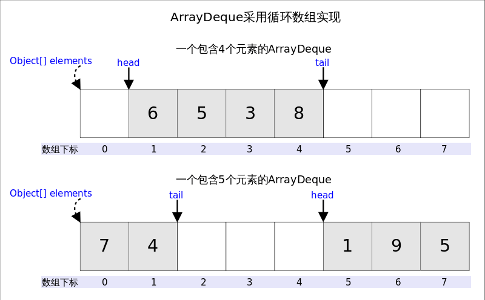

一、学习自
https://www.cnblogs.com/CarpenterLee/p/5468803.html
https://blog.csdn.net/u011240877/article/details/52860924
https://www.cnblogs.com/Dylansuns/archive/2017/04/30/6789161.html
https://www.cnblogs.com/lemon-flm/p/7877898.html
http://ifeve.com/java-blocking-queue/
ArrayBlockingQueue：http://www.cnblogs.com/skywang12345/p/3498652.html
LinkedBlockingQueue：http://www.cnblogs.com/skywang12345/p/3503458.html
LinkedBlockingDeque：http://www.cnblogs.com/skywang12345/p/3503480.html
ConcurrentLinkedQueue：http://www.cnblogs.com/skywang12345/p/3498995.html
二、概要
1.基本上,一个队列(Queue)就是一个先入先出(FIFO)的数据结构
2.队列有两种：单队列和循环队列。
3.ArrayDeque是双端队列,它既可以当作栈使用,也可以当作队列使用。底层是数组,而且是循环数组。
4.ArrayDeque是非线程安全的。
5.ArrayDeque中的head代表队列头指针,并不是数组第一个下标,tail代表尾指针并不是数组最后一个下标。看下图就能理解了。
6.根据下述示例走完了可以看到,remove(),pop(),poll()三个方法其实是一样的实现,都是用来删除队列头部数据
7.add()以及offer()将数据添加在队列尾部,结合删除操作实现“先进先出”效果。
8.push()将数据添加在队列头部,结合删除操作实现“后进先出”效果

三、学习示例加思考过程
本文源码基于jdk 1.8
这里我以ArrayDeque为例：
按照我们正常使用的方式来,先实例化然后根据调用的方法去一步步看源码实现,这样理解起来快些。
四、问题
1.源码内多次用到类似head = (head - 1) & (elements.length - 1)这种形式的代码,这是什么意思呢？
这段代码用来解决下标越界的。这段代码相当于取余,同时解决了head为负值的情况。因为elements.length必需是2的指数倍,elements - 1就是二进制低位全1,跟head - 1相与之后就起到了取模的作用,如果head - 1为负数(其实只可能是-1),则相当于对其取相对于elements.length的补码。
假设我实例化后立即调用push(),那么head - 1 == -1,elements.length - 1 == 15,出现了负数怎么办？&其实是二进制运算,那么负数怎么转为二进制呢？负数转换为二进制,就是将其绝对值的二进制的每一位变反(1变0,0变1)最后将变完了的数值加1,就完成了负数的补码运算。这样就变成了二进制。
那么这时候,head变为了15,而tail仍然是0。从这里也可以看出,head已经tail并不对应数组第一和最后一个下标！！！